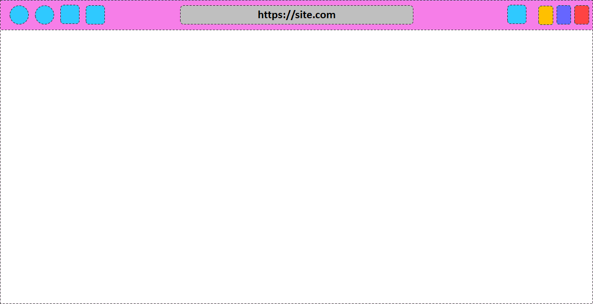

Internet Cat
The most cute and kind web browser
Features (upcoming)
- Access IPFS and recognizes .eth domains
- Support Dat sites, with Beaker modules
- IPFS reading mode for www sites
- Steem Keychain
- Adblock and privacy
- Web 3: switch between MetaMask and Frame
- Basic Attention Token
- Integration with FrameworkJS and Common Design
- Chrome extensions and apps
- Colored tabs
Other upcoming features
- Recognize OL for .eth domains
- Support ZeroNet sites
- Download manager integrated with HTML5Apps Platform
- Emercoin and Namecoin domains
- UniStore
- DAppStore
- OmniLogin, data sync
- If not on Floflis, show contacts
- Start page supports Floflis' tiles and animated backgrounds
- If not on Floflis, support Alertaj
- Mobile mode on same desktop app (hybrid app)
- UWP APIs (FrameworkJS)
- Shared libs for faster pages
- peer site reviews
- Support ssb:// and bzz:// sites
- ip mode
- Proxy switch
- Support Emmet and other markp languages
r1 feature list (first version)

- Address bar
- Sandbox iframe
- Load WWW pages (reads from input, updates on iframe)
- Show loading status
- Refresh
- Start page
- Home button
- (message in start page) IC isn't ready, because it doesn't:
- - supports iframe and other web advanced features
- - stores logins
- - saves sessions
- - records history
- - haves multi-tab browsing
- - support extensions
- Dragable frameless window
- Previous page button
- Floflis' tree folder
- KeeWeb password manager (as a new window/Electron process)
- Bitcoin Center (with Bitcoin's Wallet and Pig Vault)
- Install Cygwin with packed needs: IPFS, NodeJS, Dat
- Updates from Dat
r2 feature list


- Icon on system tray
- Issues app
- Tasks app
- Tabs
- https://github.com/mottox2/electron-tab-browser
- https://github.com/geeeeeeeeek/electron-tabview
- https://github.com/electron/electron/blob/master/docs/api/browser-window.md
- Previous/Forward
- Load favicon, title, color and description
- Start: most acessed
- Settings: resume, search, buttons
- On init, choose between Delicate and Common Design
- chrome themes: J:\.d\personal\data\tasks\Z- Labs\Plasmozilla FireFloflis\MaterialFox
-
BTC web3 API
- Brand new browser menu (organized, fast, intuitive)
r3
- Smaller tabs
- Colored tabs
- History
- Favorites (with placeable previews and API)
- Based on Muon (Electron's fork early used on Brave browser)
- Switch between MetaMask/Frame
- MetaMask/Frame button
- Create 3Box profile for browser
- Aragon
- Own DAO https://rinkeby.aragon.org/#/ic/
- blur:
- app.commandLine.appendSwitch('--enable-experimental-web-platform-features');
- mainWindow = new BrowserWindow({x: 100, y: 100, width: 800, height: 600, 'web-preferences': {'plugins': true}});
- https://discuss.atom.io/t/how-to-access-chrome-flags-in-electron/16470/6
- https://developer.mozilla.org/en-US/docs/Web/CSS/backdrop-filter
- https://codeburst.io/ios-backdrop-effect-on-chrome-and-non-webkit-browsers-summary-of-currently-available-techniques-34b0f624ae6a
Session manager
- https://caniuse.com/#feat=css-backdrop-filter
- Open Badges
r4
- IPFS button and daemon
- Dat button and CLI
- .eth sites
- Support protocols: browser, file, localhost, http, https, ipfs, dat (C2 text begins with, C2 text contains)
- Session manager
- If not on Floflis, display contacts
- If not on Floflis, support Alertaj
- Add other local browser users
- Users' accounts are encrypted
- Sync
r5
- Better integration with Dat
- Ask default browser
- Supports UWP (Windows)
- Duniter
r6
- Steem Keychain
- Task manager
- Save articles on DPocket
- Privacy: canvas fingerprint blocker
- Proxy switch
- Supports S/V
- Per-site personalized CSS and JS
- Adblock
- Recognize IPFS/Dat hash on links, and show available others
- Anon mode
- Tor mode (attent)
- FrameworkJS: HTML5Apps Platform suggest
- Print actual page
- Search engine settings
- Restore closed tabs
- Start page: most accessed, pinned, search, categories
- When openning a URL with closed browser, open just this URL and tell the session is saved. Even doing more things on top without openning previous sessions, they`re kept and supports renaming, thumbnail and descriptions.
r7
- pdf.js
- Improved adblock and anti-tracking (from Brave browser)
- Support BAT tokens and ads
- Distribution for PortableApps Platform
r8
- Features/modules from Beaker browser
- WebTorrent
- Identify when Internet connection needs login
- Chrome Web Apps (integrate with HTML5Apps Platform)
- List installed extensions and apps
- UniStore (extensions, web apps, themes)
- ZN
- Support Emercoin and Namecoin domains
- Recognizes Omni-Link for decent TLD domains
- Download manager integrated with HTML5Apps Platform
r9
- DApp Store (comptible with Chrome apps)
- Support SSB
- Omni-Login (Dat`s UnwalledGarden, ZN, SSB, SW, IPNS) data sync
- DCloud (IP-cluster, Siacoin and others - integrated with Floflis and HTML5Apps
- Start page supports Floflis` tiles and animated backgrounds
- https://github.com/lmgonzalves/animated-refresh-icon
- Open protocols on external apps
r10
- Mobile mode
- Detect when site is a PWA, banner with ask to install
- Shared libs for faster pages
- P2P site reviews
- i2 mode
- QR
- Support Emmet/QSL
- OS native print dialog, IC printer (supports print to PDF and others)
r11
- EtherAddressLook
- Download chat histories from different messengers
- KDE Connect